這不是一份成果簡報，是一份「做了什麼實驗、量到什麼、錯在哪」的紀錄。
Q · 52.8% 是怎麼算的？
在 7,322 個 AOI 候選裡，模型以 P(false call) ≥ 0.961 排掉的比例，條件是排掉的裡面真缺陷不超過 0.5%——15 個，剛好 0.50%。
Q · 為什麼不報準確率？
準確率 96.5% 把漏一個缺陷和多看一個誤報算成一樣的錯；產線上漏一片是出貨事故、多看一個是幾秒。所以頭條是操作點，不是準確率。
Q · 0.82% 是什麼？
15/3,018 的 95% 信賴區間上緣。它說的是：這個 split 剛好 0.50%，但換一批板子可能超過 0.5% 的預算，我不能保證。
在漏網率不超過千分之五的前提下，省掉一半的人工複判——而且每個數字都有出處。
Q · 為什麼說 41.2% 這個比例不會轉移到真產線？
真產線的 AOI 誤報是真缺陷的一到兩個數量級。我量過：漏網率不受 prevalence 影響（分母是缺陷數），但省掉的人工比例會隨誤報比例上升，52.8% 是下限；在 0.5% prevalence 下是 89.0%。
Q · 你怎麼決定 0.5% 這個預算？
它來自我自己寫的品質文件 QP-110——這個專案的驗收標準全是自撰的，不是 IPC-A-610，因為那是有版權的。預算是一個輸入，不是我調出來的。
檢測機為了不漏，把每一個可疑的地方都圈起來，結果六成是假的，每一個都要人看。
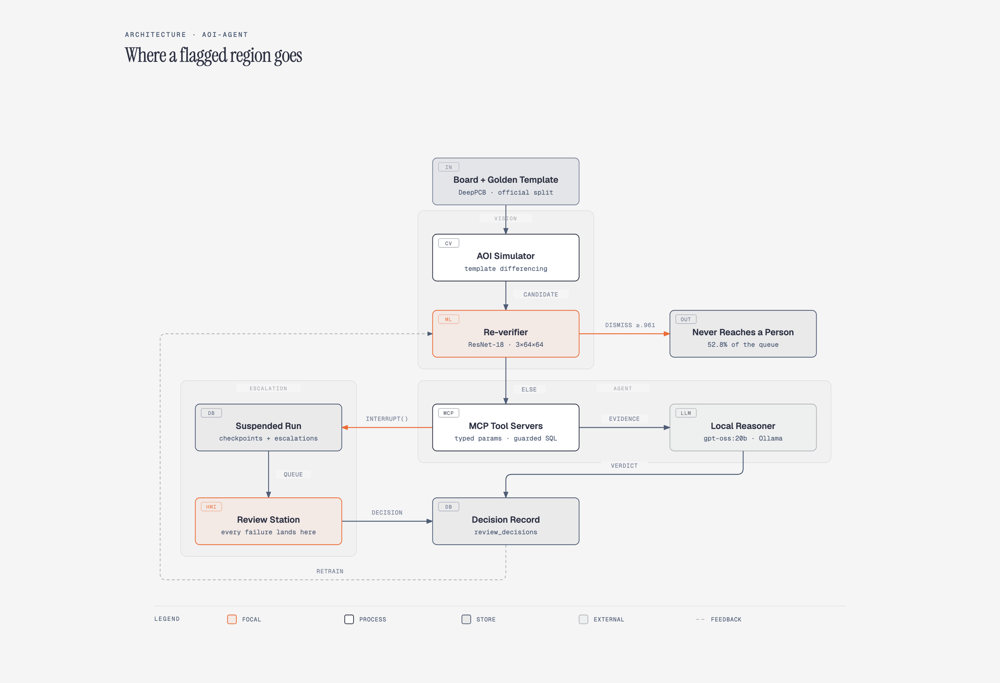
Q · LLM 在這個系統裡做什麼？
只做一件事：對 17.8% 進到它那一支的區域寫一段給作業員看的說明。判定是分類器的信心決定的，量過 LLM 決定會比較差。
Q · 哪一層最貴？
時間上是 LLM：一段說明中文約 17 秒。但 82.2% 的區域根本不經過它，一個候選在複判模型上是 2.5 ms。
一個紅框進來，先被幾毫秒的模型分成三種：明顯誤報、明顯缺陷、看不準；看不準的才走到 agent，agent 寫完說明交給人。
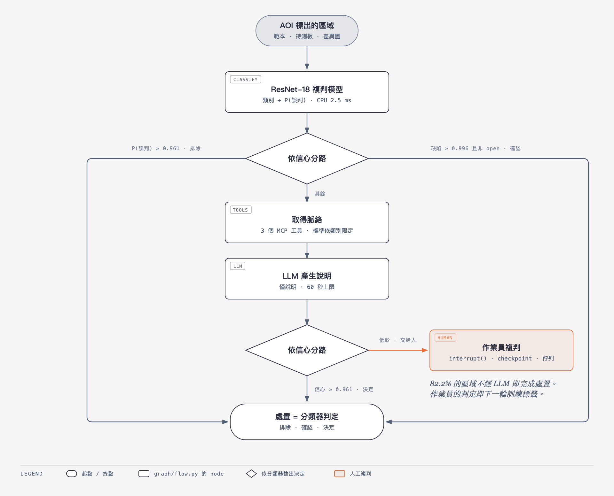
Q · 圖上哪一格是 LLM 決定的？
沒有。兩個菱形都讀分類器的信心（0.961 / 0.996），LLM 只在「產生說明」那一格；量過它決定會比較差（71.7% 對 85.0%）。
Q · 為什麼要 checkpoint 到 SQLite？
因為作業員可能兩天後才回來答。InMemorySaver 跟著 CLI 一起死，那個升級就消失了；SQLite checkpoint 讓它活過程序重啟，第二個程序 resume 過，測試釘著。
分類器先判，兩個門檻決定誰直接處置；看不準的拿脈絡、請 LLM 寫說明，最後交給人——而且交給人的那一步會存檔，程式重啟還在。
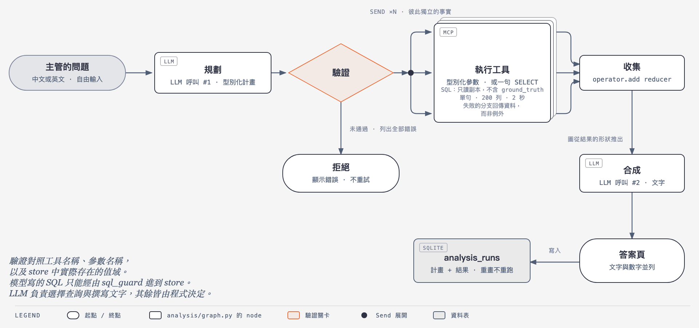
Q · 為什麼分析路徑沒有 checkpointer？
因為它沒有任何地方會停下來等人。處置路徑要等作業員判，可能等兩天，所以要 SQLite checkpoint；/ask 什麼都不處置，需要的是可重現，所以存的是 analysis_runs 表，圖從存的資料重畫，不重跑計畫。
Q · Send 平行展開是為了快嗎？
不是。工具幾毫秒，兩次模型呼叫二十幾秒，省下的是雜訊。展開是因為那幾個事實彼此獨立，這是工作的形狀。每次 run 都記 tools_wall 和最長分支，不准把它說成加速。
模型只做兩件事——決定查什麼、把結果寫成話；中間的驗證、平行查詢、畫圖、存檔都是程式。
Q · 為什麼不直接拿標註的缺陷框訓練模型？
因為那樣就沒有誤報。複判模型要學的是「AOI 圈出來的東西裡哪些是假的」，7,322 個候選裡 4,304 個是相減真的圈出來的誤報，不是隨機造的，不然分佈是編的。
Q · 這個閘門後來有沒有出過事？
有，08-26 拿真的照片資料集 HRIPCB 跑，任何門檻都過不了：門檻 60 只抓到 16.9% 的瑕疵。相減的適用範圍是二值化影像，這句是量出來才寫進文件的。
誤報不能用捏造的，要用真的 AOI 邏輯生出來；所以先證明「相減」找得到瑕疵，再談後面的模型。
Q · 你怎麼發現 5.4% 是錯的？
重算時改成按缺陷數而不是按框：157 個 IoU 沒過 0.33 的缺陷裡，150 個其實有候選壓在上面。那個 print 是框畫得多緊的統計，不是偵測失敗。
Q · 為什麼要分成 0.22% 和 0.38% 兩個數字？
因為它們的修法不同。0.22% 是 AOI 沒圈到、模型永遠救不了，那是牆；0.38% 是模型排掉的、門檻往上調就會變小，那是旋鈕。合成一個 0.61% 就看不出哪個能動。
我把「框畫得不夠緊」當成「沒抓到」，把整線漏網率高估了九倍——修正後反而更好看，所以更要講。
Q · 為什麼不做次像素對位？
因為影像是二值的，warp 半個像素會在每條邊寫出灰階，相減之後每條邊都變成候選。量過：60 個已對齊的 pair 裡 17 個被修得更差。
Q · 旋轉怎麼辦？
不辦，而且文件說明白它不辦：1.0° 的 pair 候選數是對齊的兩倍。真產線要靠機構或更貴的對位，這一層不假裝。
樣板和待測板差幾個像素，相減就滿版都是假警報；對位把它修回來，但只修它真的會修的那種。
Q · 為什麼是 ResNet-18 不是更大的模型？
因為瓶頸不在模型容量。一個候選 CPU 2.5 ms，一片板 20 個候選 50 ms，週期是 10 秒。剩下的漏網是 confident errors，換大模型不解決那個。
Q · 為什麼驗證集要按板子切？
同一片板上 10 到 30 個 patch 背景幾乎一樣，按 patch 隨機切等於訓練集看過驗證集的背景，分數會虛高。按板子切，一片板的所有 patch 只在一邊。
Q · 三個通道少一個會怎樣？
08-28 做過沒有樣板通道的版本（偵測器的 crop）：同一個架構，在 ≤0.5% 漏網下只省 2.8%。樣板通道不是方便，是必要。
模型看的是三張小圖疊在一起：樣板、待測、差異；它學的是「這個紅框是假的嗎、如果是真的是哪一類」。
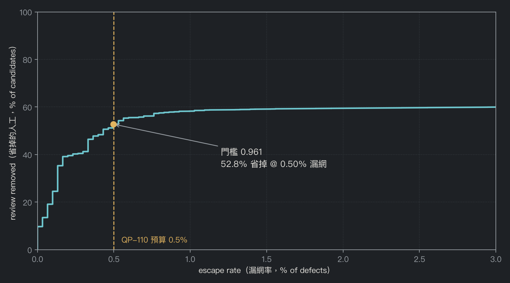
Q · 為什麼不對 short 單獨設更嚴的門檻？
試過。漏掉的那些 short，模型給的 P(short) 是 0.00007 到 0.00589，留下的中位數是 1.000。它們不是模糊地帶，是很有信心的錯，門檻切不開。要靠不共用這個失敗的第二個量測——電測。
Q · 換一個 checkpoint，最差的類別還是 short 嗎？
不一定。08-24 重訓之前是 open 在 1.35%。所以守這條的程式讀的是規範表 GOVERNS，不是寫死一個類別名。
Q · 0.961 怎麼來的？
scripts/report.py 掃整條曲線，找漏網率 ≤0.5% 下省最多的門檻。四捨五入要往上：0.915 那次往最近取，結果 15 個漏網剛好 0.5005%，超預算。
曲線上每一點是一個門檻：往右漏得多、省得多；我們選的是漏網率剛好不超過千分之五的那一點。
Q · 為什麼用漏網率預算計價，不用加速比？
因為加速比對這條線沒意義：41 ms 對 10 秒。真正會變的是操作點——INT8 可能讓 0.5% 預算下省掉的人工變少，那才是代價。
Q · 動態和靜態選哪個？
差 0.1 MB 和三個 disagreement，是丟銅板。報告的規則是選省最多磁碟的那個，那是動態。但沒有部署，站台跑 float32。
量化不是為了快，是為了記憶體；而且一個量化的結論只對一組權重成立，換了權重要重量。
Q · YOLO 訓完 1.2%，這個實驗算失敗嗎？
算回答了問題：偵測器的 confidence 不是 P(false call)。它值錢的地方是反證——同一個 ResNet 拿掉樣板通道只剩 2.8%，所以主線的樣板通道不是方便，是必要。
Q · 為什麼是 YOLO26n 不是更大的？
M5 Air 上 56 分鐘，而且問題是 confidence 的性質，不是容量。imgsz=1280 是唯一沒試、可能有用的方向，文件裡寫著。
真的 SMT 產線沒有樣板可以相減，所以試偵測器；它找得到瑕疵，但它的信心分不出真假。
Q · 怎麼確保門檻以後不會再脫離來源？
tests/test_threshold_citations.py：每個門檻常數（0.961、0.996）對照 docs/architecture.md 的表，表裡的值來自哪個腳本寫明；值偏了或表裡沒那一列就 fail。
Q · 四捨五入往上是什麼意思？
門檻越高排掉越少、漏得越少，所以往上是安全方向。0.9154 取最近變 0.915 多放了一個缺陷，15/2,997 = 0.5005% 超過 0.5%；往上取 0.916 就在預算內，代價是 0.07 點的人工。
程式裡的兩個關鍵數字，一個引一份沒有數字的文件、一個引一個沒跑過的掃描——看起來都有出處，其實都沒有。
Q · 為什麼測試沒抓到「沒有說明」這件事？
因為測試描述的是行為存在，不是行為發生的比例。上面沒有一個測試問「6,736 個處置裡多少個有說明」。之後加了 explanation_status 欄位和 explanations 指令，讓那個缺席可以被數。
Q · EXPLAINED_BAND 為什麼是 0.035？
掃出來的：這個寬度讓 6,736 個自動處置裡 1,460 個（21.7%）拿到書面說明，再寬 LLM 呼叫數暴增、再窄幾乎沒人有說明。在 docs/architecture.md 的表裡。
重訓之後門檻往上跑，另一個常數沒跟著動，兩個數字上下顛倒；測試變紅的是小事，沒變紅的那件事才可怕。
Q · 那模型層在 HRIPCB 上怎樣？
硬把門檻設在 recall 最好的地方往下跑，模型在 0.961 排掉 1,387/2,953 個真缺陷，46.97% 漏網，對 0.5% 的預算。它把淡的差異讀成誤報而且很有信心——又是 confident errors。
Q · 這個實驗證明了什麼、沒證明什麼？
證明相減前端的邊界。沒證明的：只有一個從沒看過照片的 checkpoint、灰階門檻是看了資料才選的、瑕疵是畫在 10 片板的照片上的。真的第二次拍攝在「對齊」和「對齊加擾動」之間，兩者都不是。
Q · 為什麼不直接在 HRIPCB 上重訓？
因為第一層壞的原因是物理的，重訓模型解決不了相減找不到瑕疵。要換前端——這和偵測器實驗從另一邊得到同一個結論。
拿真的照片跑同一套流程，我以為會壞在模型，結果壞在相減那一關：照片上每條線的邊緣都跟瑕疵長得一樣。
Q · 那 LLM 在系統裡還有什麼價值？
它寫給作業員的那段說明：把分類器的信心、這台機的缺陷率、驗收標準串成一段話。這在 17.8% 進到它那一支的區域上；判定永遠是分類器的。
Q · LLM 逾時為什麼不升級給人？
因為判定在進到 LLM 之前就做好了。逾時的代價是少一段說明，記成 explanation_status = timed_out，站台顯示一個「無說明」標記，有指令可以數。如果每次逾時都升級，佇列會被塞滿。
Q · 這個結論會不會因為模型變強而改變？
會，所以規則寫的是「沒有一個量測說要放回去之前，不放回去」。agent_eval.py 九分鐘可以重跑，換模型就再量。
我原本讓語言模型看完證據做最後判定；量了才發現它改分類器的答案 12 次只對 1 次。
Q · 為什麼不在 prompt 裡叫模型忽略不相關的段落？
因為錯的段落一旦進了 prompt，模型忠實複述就是它的工作。要在檢索邊界擋住：段落不能到 prompt。改完量：0.0%。
Q · 舊的錯誤說明怎麼處理？
原地標記，不重生也不刪。它們是紀錄；重生會讓「當時作業員看到什麼」消失。
問 open 的驗收標準，第一名回來的是針孔的規則；五筆等人判的區域全帶著一條不存在的規則。
Q · 為什麼中文比英文慢？
同樣內容中文的 token 是英文的兩到三倍，速度都是 20 tok/s。但第一次量的 3.7 倍大半是 prompt 沒給門檻，模型寫了一篇「如果高於／如果低於」的作文；給了門檻、要求一段話，變 1.4 倍。
Q · 量延遲要注意什麼？
ollama ps 不是 GPU 檢查，它只看 Ollama 自己的模型；同一台機的 torch 訓練會讓數字差 25 倍而 ollama ps 是乾淨的。腳本掃 process table，忙就拒絕發布；報 eval_duration 會低估三成，要報服務時間。
一個常數同時當「承諾多久給判定」和「等模型多久」，結果模型寫說明常常寫到一半被砍。
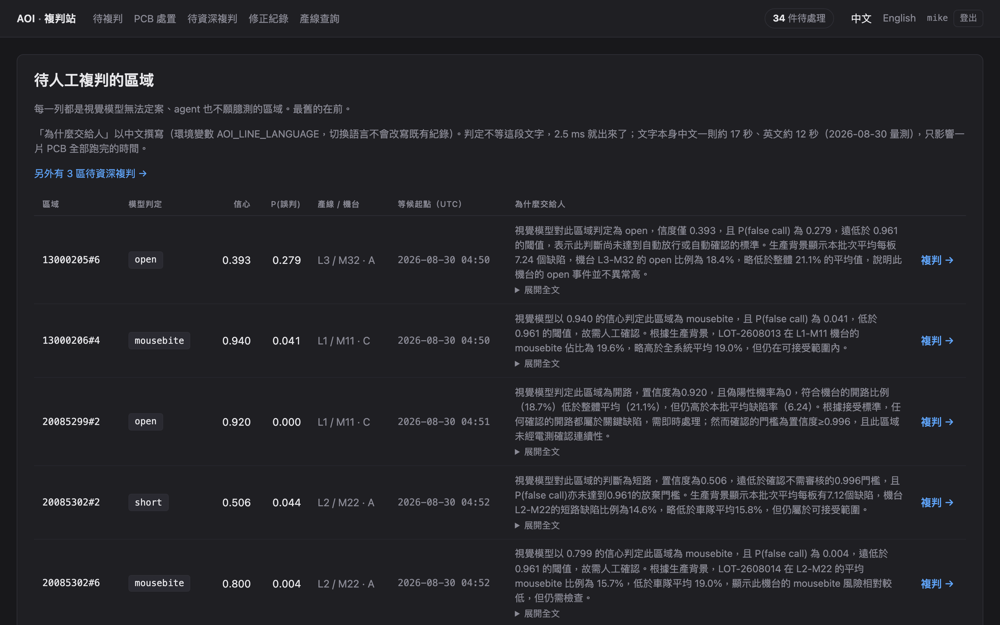
Q · 作業員一天看幾個？
這個資料集一片板約 20 個候選，82.2% 不經人；示範的 50 片板留下 34 個待複判。
Q · 為什麼說明是中文？
AOI_LINE_LANGUAGE 預設 zh-TW，作業員讀什麼語言就寫什麼；切換介面語言不會改寫紀錄。
每一列一個看不準的區域：模型判定、信心、誤判機率、產線機台，右邊是 agent 寫的說明——等最久的在最上面。
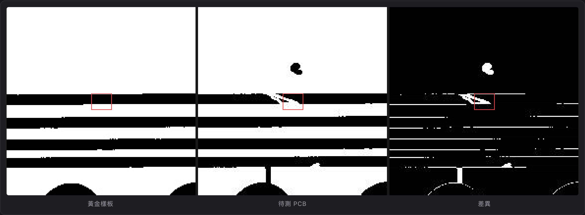
Q · 為什麼不顯示 ground truth？
作業員的答案是下一輪訓練的標籤；先給答案收到的是回音不是判斷。這條在 dict 邊界擋，不是模板裡藏。
Q · 驗收標準從哪來？
search_standards 帶 defect_class 查這一類的文件；未限定時 27.8% 的段落來自別類，08-23 修在檢索邊界。
上面是 agent 的理由，中間三張圖（樣板、待測、差異），下面三欄證據，再下面是七個判定鍵和「我不確定」。
Q · 為什麼「不確定」不能記成一個判定？
review_decisions 是下一輪訓練的標籤——之前 5 筆亂點的、4 筆錯的就是從那裡刪掉的——「不確定」是唯一不能成為標籤的答案。所以它是自己的表、自己的佇列狀態，被退回的次數就是排序，退回越多的越前面。
Q · deferred 那個 bug 是怎麼發生的？
OPEN_STATUSES 只列了 pending。一個區域被退回後不算 open，模型的判定變成整片板的 standing decision，板子從 held 變 released——一個作業員拒絕猜，反而放行了板子。區域層級全對，所以區域層級的測試看不到。
系統跑得起來和有人用得下去是兩回事；每一個真人用了才冒出來的問題，都變成一條規則。
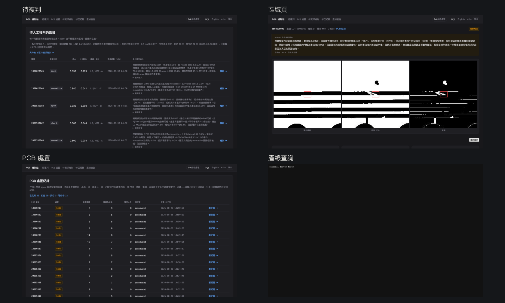
Q · 站台為什麼不用前端框架？
產線的瀏覽器常常鎖 JS、沒有網路。站台無 JS 可用，唯一的相依 vendor 進來，圖是伺服器端 SVG。
Q · 影片是怎麼錄的？
scripts/demo_record.py 用 Playwright 操作站台、Kokoro 合成旁白、ffmpeg 合成；影片不進 git，放 GitHub Release。
一片板進來、模型排掉大部分、兩個看不準的進佇列、作業員打開一個、按 0 退回、主管問一句話拿到圖。
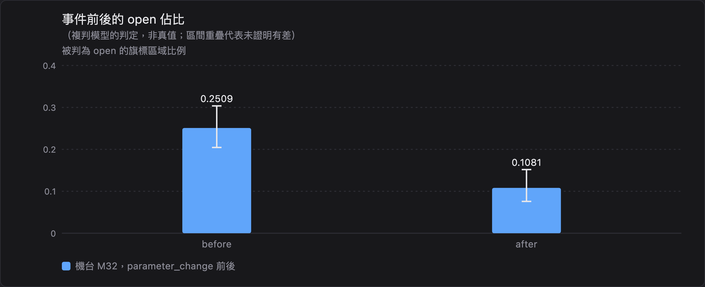
Q · 圖是誰決定畫什麼的？
程式，從結果的形狀：機台比較是柱狀、事件前後是一對柱加區間。模型不能指定圓餅圖，prompt 有一條規則說明這件事。
Q · 那段答案可信嗎？
它是從查回來的數字寫的，每個數字有頁面級核對；那次出現過一個編的 58.1%，現在會標出來。
問「M32 參數變更前後 open 的比例有沒有變」，回來的是它怎麼理解、假設了什麼、查了什麼、一張有區間的圖、一段每個數字都查得到的話、和花了多久。
Q · 為什麼題目要別人出？
在場的 20 題是 100%，因為出題的人就是寫 prompt 的人。三個沒看過 prompt 的人出 70 題，第一次 79%，這才是規劃器的分數。
Q · 為什麼打分打計畫不打答案？
工具是確定的：計畫對，查回來的資料就對。答案是另一場考試 synthesis_eval，量的是「文字是不是忠於它拿到的數字」，兩種語言都要跑。
Q · 該答 42 題只對 27 題，這個數字怎麼讀？
沒拿分的 15 題大多是它拒答了該答的——膽小的方向。之後每次加工具都重考這 70 題，看膽子有沒有變大到不該的地方。
主管打一句話，模型只做兩件事——決定查什麼、把結果寫成話；中間查什麼、驗證什麼、畫什麼圖都是程式決定。
Q · 守門層擋得住什麼、擋不住什麼？
擋得住：寫入、多句、不在清單的表、讀檔函式、超過 200 列或 2 秒、看答案欄（副本裡沒有那個欄位）、比對一個不存在的值。擋不住：欄位用對了但意思用錯，像把 index_on_board 當位置。那類靠 prompt 規則和印在頁面上的 SQL。
Q · 為什麼要有控制組？
因為加一個工具會改變規劃器在別的題上的行為——08-25 加誤判率工具時就發生過，該拒的從 28/28 掉到 21/28。沒有控制組看不出哪些變化是工具本身、哪些是它讓規劃器變膽。
Q · 多答四題值得冒這個險嗎？
數字說值得，條件是門是結構性的：兩句錯的 SQL 現在一句被守門擋下（值不存在）、一句仍然要靠人看頁面上的 SQL。這句話寫在 invariant 裡，不藏。
讓模型自己寫 SQL 能多答幾題，代價是它會寫出「看起來對、其實錯」的查詢；所以做成有對照組的實驗，門擋在它和資料庫之間。
Q · 為什麼不直接做 agent 迴圈？
迴圈要加三樣東西：圖上一條往回的箭頭、什麼時候停的規則和預算、評測從打計畫變成打路徑。而 70 題裡沒有一題需要「看了結果再想」，需要的只是把第一步的一個值填進第二步——那是依賴參數，程式做的，不是模型邊看邊想。
Q · 你怎麼確定規則沒有放太寬？
第一版就放太寬了：一個排序工具能答的題被拆成六個查詢，「這片板子」被當成集合去猜。加兩條限制再考，該答 28/42 不變、該拒從 15 到 17。而且新加的三題裡有一題是「上次出問題的那台」——必須繼續拒答，它三次都拒。
每加一個工具，規劃器就在跟那個工具無關的題目上變得更敢答；而有一種題它永遠規劃不出來——那是下一個該做的東西，而且不是迴圈。
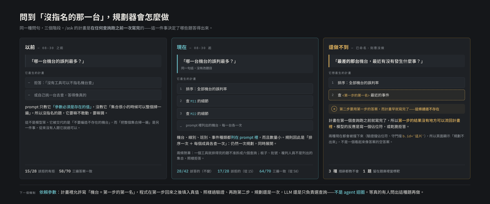
一張圖看完 /ask 這一層：以前沒指名就拒答或亂猜，現在會把整個集合掃一遍，還做不到的是「第二步要用第一步的答案」。
Q · 為什麼 benchmarks.md 只增不改？
因為改了就看不出結論什麼時候翻過。INT8 那次 08-23 說不值得、08-26 說成立，兩筆都在，讀者看得到是權重換了。
Q · 投影片上的數字怎麼保證是對的？
tests/test_deck.py：每一頁引用的數字必須出現在 benchmarks.md 或那四份被盯著的文件裡。這份投影片是從 scripts/deck_content.py 產的，內容和 pptx、網頁、講義三份一個來源。
程式一直是對的，只有寫在最顯眼地方的那個數字是舊的——所以文件也要有測試。
Q · 如果明天給你一條真的產線，第一件事做什麼？
Shadow mode：模型跟著現有流程跑，只記錄它會怎麼判。資料庫已經支援——決定只累加不覆蓋，模型一筆、人一筆並排。目的是重建漏網率的證據，因為一個看 100 個缺陷的試跑證明不了 0.5% 的預算。
Q · 這個專案最大的限制是什麼？
資料是二值化的 DeepPCB，相減前端的適用範圍就是這種影像；真的照片要換前端，而偵測器前端的 confidence 排不掉誤報，1.2%。這兩個結論從兩邊碰頭，都量過。
四件事沒做，每一件都有一個寫下來的理由，而不是沒時間。
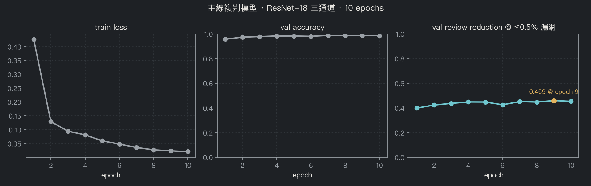
Q · 為什麼不用 val_accuracy 選 checkpoint？
它第 2 個 epoch 就 97%，之後不動，而且它把漏網和誤報算一樣的錯。用的是驗證集上 ≤0.5% 漏網下省掉的比例，第 9 個 epoch 最高。
Q · 有沒有過擬合？
train_loss 降到 0.02 時驗證指標已經平了三個 epoch——是背訓練集的跡象，所以停在 10 個 epoch。驗證集按板子切，這個判斷才可信。
十個 epoch、四分鐘；看的不是準確率那條，是「在漏網預算下省掉多少」那條。
| 做法 | ≤0.5% 漏網下省掉 | 說明 |
|---|---|---|
| 差異圖統計（平均、最大、前 32 像素和…） | 約 1% | 不用模型的地板：候選存在時就算得出的數字 |
| ResNet-18，三通道（樣板／待測／差異） | 52.8% | 主線；42.7 MB、11.2M 參數、CPU 2.5 ms |
| 同一個 ResNet-18，沒有樣板通道（偵測器 crop） | 2.8% | 外觀本身分不開真假；樣板通道是必要不是方便 |
| YOLO26n 的 confidence 直接排序 | 1.2% | 偵測器的信心是「這裡有東西」的分數，不是 P(false call) |
Q · 為什麼不試 ResNet-50 或 ViT？
剩下的 15 個漏網是 confident errors——模型給它們的 P(open) 是 0.00007 到 0.00589，換大模型解決的是模糊地帶，不是這種。而且 CPU 2.5 ms 一個候選已經是週期的零頭。
Q · 地板是怎麼算的？
差異圖上不用模型就能算的分數：平均值、最大值、前 32/64/128 個像素的和、超過某亮度的像素數，各自當 P(false call) 掃同一條曲線，最好的在 ≤0.5% 下是 1.3%。
同一把尺（≤0.5% 漏網下省掉多少）量四種做法，只有帶樣板通道的小 CNN 站得住。
| 引擎 | ≤0.50% 省掉 | 類別一致 | 不一致 | p50 延遲 | 對 FP32 torch |
|---|---|---|---|---|---|
| FP32 torch | 52.8% | — | — | 2.53 ms | 1x |
| FP32 ONNX | 52.8% | 100.000% | 0/7322 | 1.84 ms | 1.38x |
| INT8 dynamic | 52.5% | 99.795% | 15/7322 | 1.93 ms | 1.31x |
| INT8 static | 53.0% | 99.836% | 12/7322 | 0.65 ms | 3.87x |
Q · 動態和靜態的差別是什麼？
動態在推論時算 activation 的範圍，不用校正集，慢一點（1.31x）；靜態先用 512 個 trainval patch 校正好範圍，快 3.87x，但校正集選錯 split 就是作弊。兩者在 ≤0.5% 下是 52.5% 對 53.0%。
Q · 為什麼最後沒部署 INT8？
因為延遲不是問題：FP32 一個候選 2.53 ms，一片板 20 個候選 50 ms，週期 10 秒。記憶體 5 倍是真的好處，但站台目前沒有這個壓力，float32 加它掃出來的門檻更單純。
兩種量化在漏網預算上幾乎一樣，差別在速度和校正方式；而且這個結論換權重就要重量。
| batch | MPS（GPU） | CPU |
|---|---|---|
| 1 | 6.65 ms/候選 | 2.50 ms/候選 |
| 4 | 1.67 ms | 1.16 ms |
| 8 | 0.31 ms | 1.00 ms |
| 16 | 0.21 ms | 4.18 ms（CPU 懸崖） |
| 128 | 0.14 ms | 2.77 ms |
Q · 複判站需要 GPU 嗎？
不需要。CPU p50 2.50 ms 一個候選，43 MB 的 checkpoint；GPU 在 batch 1 反而慢 2.9 倍，batch 8 才追過。
Q · 你怎麼確定延遲數字沒被別的工作污染？
腳本量之前和之後都掃 ollama ps 和 process table，有 torch/ffmpeg 在跑就拒絕發布。這條規則是被一次作廢的量測換來的。
這麼小的模型，一次一個的時候 GPU 派工的成本比算還貴；批到 8 個 GPU 才贏。
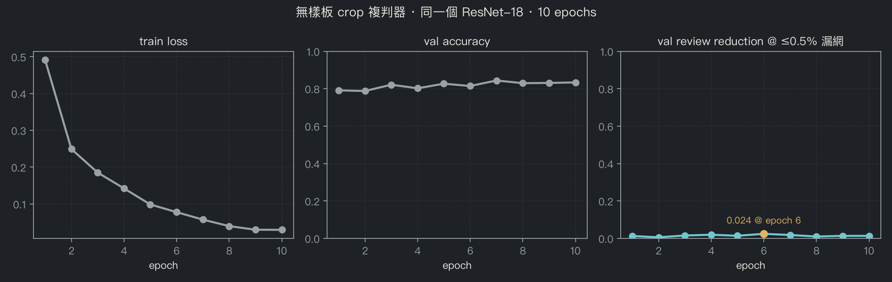
Q · imgsz 為什麼是 640？
YOLO 的預設，目標中位數 17 px 在 640 下大約 1% 的畫幅。1280 是唯一沒試、可能有用的方向，文件裡寫著沒試。
Q · crop 複判器訓不起來，會不會是訓練有問題？
有可能，而且條目裡寫了限制：CPU 訓、一個 seed。但 train_loss 降到 0.03、val_accuracy 83%，模型有在學；它學不到的是在 ≤0.5% 漏網下把誤報排掉，那條線在 1–3%。
偵測器訓 56 分鐘找得到瑕疵；拿它的框訓同一個 ResNet、沒有樣板通道，曲線根本爬不起來。
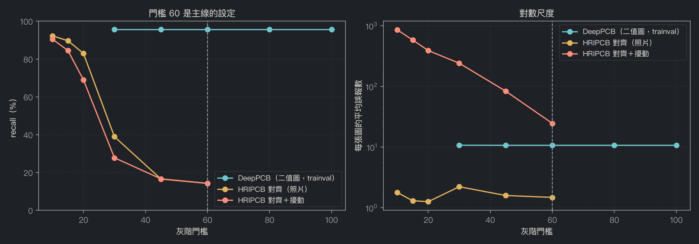
Q · HRIPCB 的 short 類 recall 為什麼特別低？
對齊版門檻 10 時 short 只有 60.3%，其他類 97% 以上。short 是兩條線之間細細的一道橋，在照片上灰階差最淡，相減最先丟掉它。
Q · DeepPCB 的門檻 60 是怎麼選的？
在二值圖上門檻 30 到 100 結果一樣（recall 95.7%、10.7 個誤報），所以 60 只是中間值。這也是為什麼它在照片上會失效：那個數字從來沒被真的灰階考驗過。
同一個相減、同一組門檻掃過去：二值圖上 recall 96% 且誤報穩定；照片上要 recall 就要付 860 個誤報一張。
| 資料集 | 長什麼樣 | 在系統裡的角色 | 沒拿它做什麼 |
|---|---|---|---|
| DeepPCB | 1,500 對樣板／待測，二值圖，六類瑕疵有框；官方 split，測試集 7,322 個候選 | 主線：模擬 AOI 產生候選、複判模型訓練與量測、52.8% 來自它 | 沒重切 split（可比性） |
| PCB-AoI | 真的錫膏照片，有標框，沒有樣板 | 只給 YOLO 偵測器；證明相減前端在 SMT 不存在 | 沒拿來訓主線模型（沒有樣板通道） |
| HRIPCB | 10 片板的照片，693 張畫上瑕疵，另 693 張旋轉 ±10° | 只當考卷：原封不動跑主線流程，看在哪一層壞 | 沒訓練、沒調門檻、類別表沒合併（missing_hole 沒有工作指示） |
Q · 模擬的產線資料會不會讓 /ask 的評測失真？
種的時候故意放了控制組：M22 和 M32 有真的效果，另外三台機有事件但沒效果，M11 承接鏡像。一個工具如果對「有沒有事件」而不是「有沒有影響」打分，會在控制組上露餡。
Q · HRIPCB 為什麼不合併到 DeepPCB 的類別表？
它的 missing_hole 不是 DeepPCB 的 pin-hole，而且沒有對應的工作指示。硬合併等於替一個沒有驗收標準的類別發明標準。
一份訓練和量測、一份只給偵測器、一份只當考卷。
| 常數 | 值 | 來自 | 改的時候要做什麼 |
|---|---|---|---|
| DEFAULT_DISMISS_THRESHOLD | 0.961 | 操作點掃描，≤0.5% 漏網下省最多，往上取整（scripts/report.py） | 每次重訓重掃 |
| ESCALATE_BELOW | 0.961 | = DEFAULT_DISMISS_THRESHOLD；讓 agent 那一支永遠不能排除 | 跟著上一個走 |
| EXPLAINED_BAND | 0.035 | 掃描：這個寬度讓 6,736 個自動處置裡 1,460 個有書面說明 | docs/architecture.md 的表 |
| CONFIDENT | 0.996 | = ESCALATE_BELOW + EXPLAINED_BAND；只是成本閘門，不改任何處置 | 關係式，不手動改 |
| IOU_THRESHOLD | 0.33 | DeepPCB 自己的 benchmark 慣例 | 不改，為了可比 |
| 灰階門檻 | 60 | S0 gate；在二值圖上 30–100 都一樣 | 換資料集要重跑 gate_check |
| RESPONSE_BUDGET_S / EXPLANATION_DEADLINE_S | 10 s / 60 s | WI-300 的承諾 / 量測到的說明時間上限 | 前者不跟模型走，後者跟量測走 |
Q · 如果換一批資料重訓，哪些數字要動？
0.961 重掃、ESCALATE_BELOW 自動跟、CONFIDENT 是關係式自動跟；EXPLAINED_BAND 要重看它買到多少說明；灰階 60 換資料集要重跑 gate。這整條寫成 skill，順序不能跳。
Q · 為什麼 CONFIDENT 不影響任何處置？
它只決定要不要叫 LLM 寫說明，不決定處置——掃到 0.999 改變 0 個處置。所以它是成本閘門，寫成 ESCALATE_BELOW + 0.035。
每個數字都有一個打得開的檔案；測試在數字和出處分開時會紅。